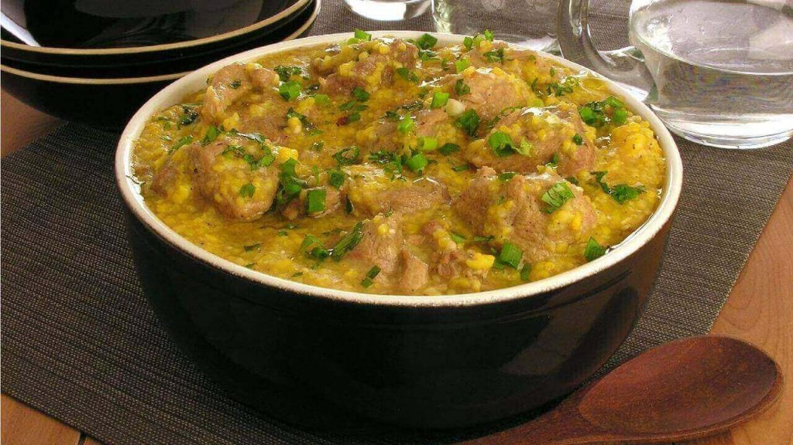

Carnes · Suínos
Pernil recheado com canjiquinha

Ingredientes
- 1 pernil recheado com purê de maçã (tipo Sadia) ou similar
- 2 colheres (sopa) de margarina (+ ½ xícara derretida para a berinjela)
- 1½ xícara (chá) de vinho branco
- 1 kg de berinjela em cubos médios
- 4 xícaras (chá) de caldo de legumes
- 2 xícaras (chá) de canjiquinha
- 1 xícara (chá) de cebola roxa em tiras
- 2 xícaras (chá) de tomate sem pele/sementes em tiras
- 1 xícara (chá) de cebolinha picada
- ½ xícara (chá) de manjericão
- ½ xícara (chá) de azeite
- Suco de 1 limão, sal e pimenta
- Galhinhos de manjericão para enfeitar
Modo de preparo
- Descongele o pernil na geladeira ~18 h. Asse a berinjela com margarina a 200 °C por ~1 h.
- Asse o pernil com ½ xícara de vinho coberto ~45 min; pincele com margarina e continue ~50 min, regando com o vinho restante se secar.
- Torre a canjiquinha; cozinhe no caldo fervente até secar. Misture berinjela, cebola, tomate, cebolinha, manjericão, azeite, limão, sal e pimenta. Sirva ao redor do pernil.